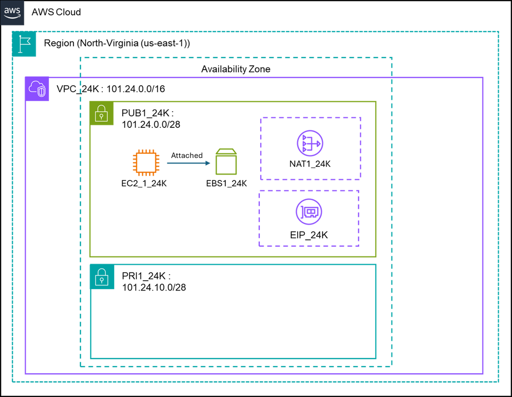
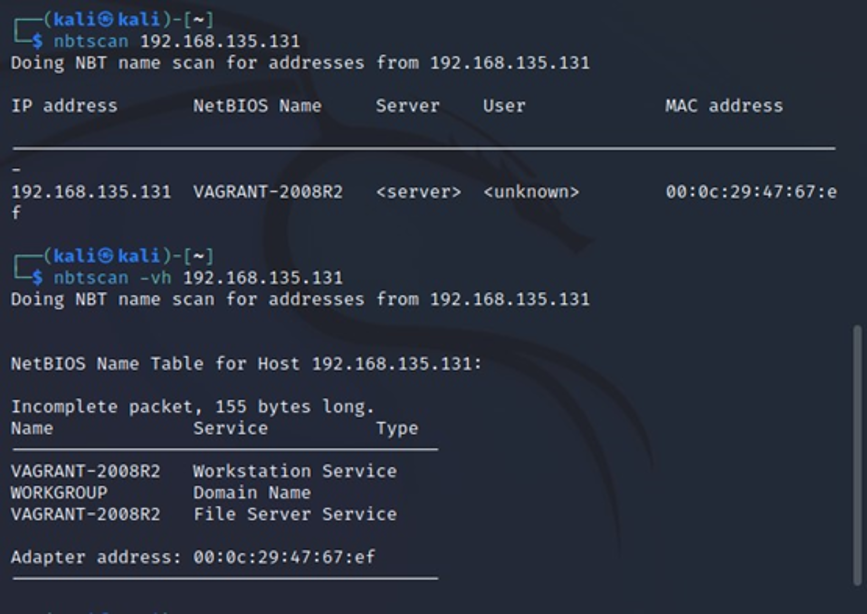
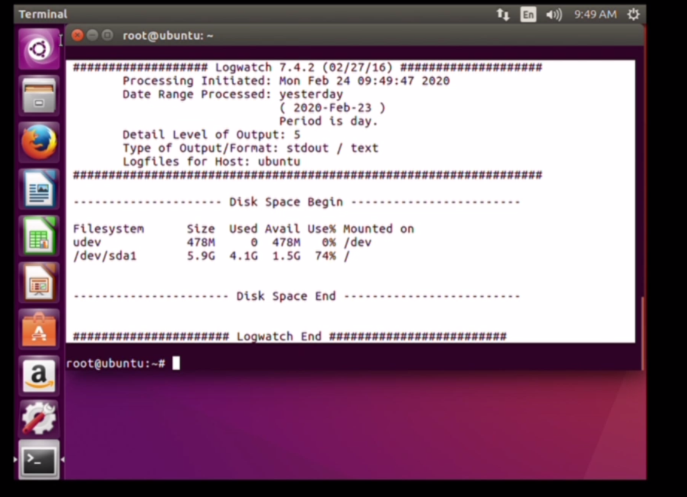
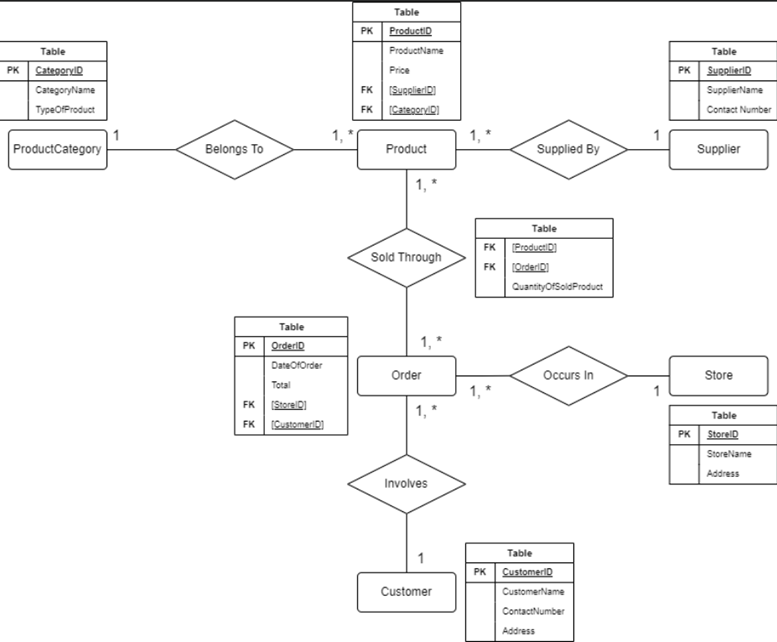
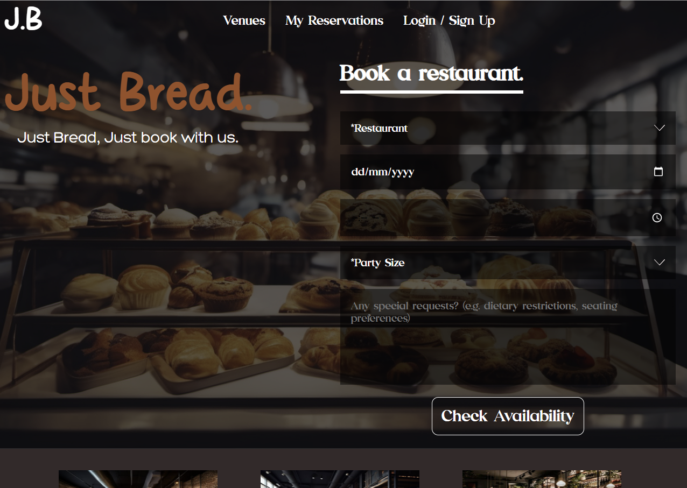
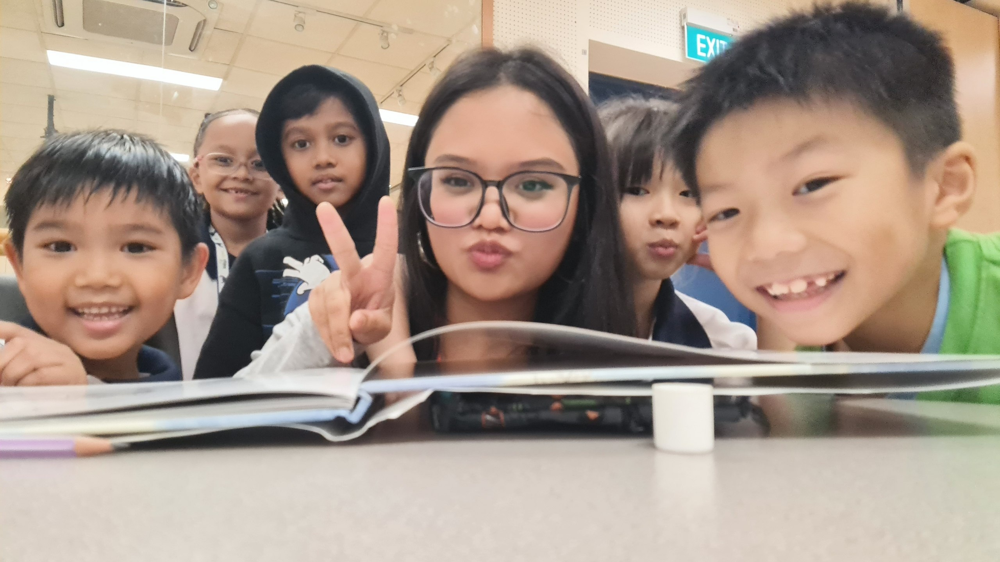
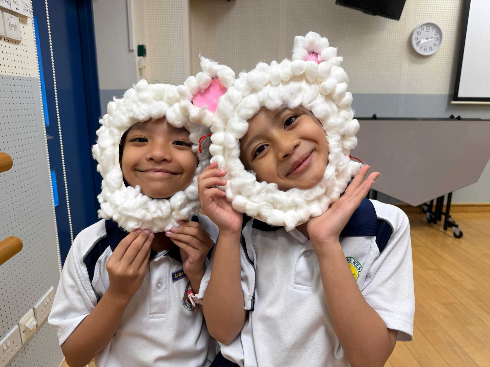
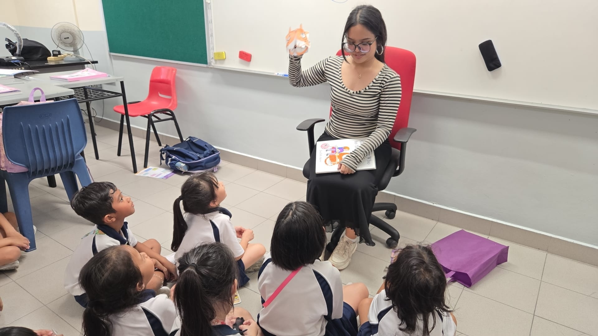
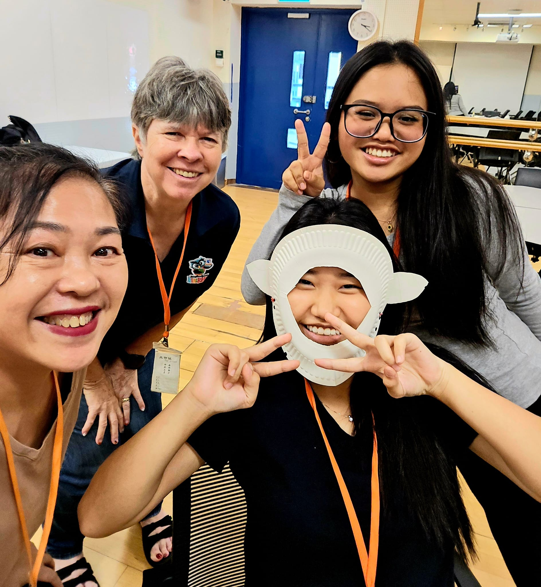

Deployed an AWS cloud environment using AWS Services, creating an EC2 instance to run a PHP webserver and host a live webpage.

Analyzed malware incidents using PCAP files to identify vulnerabilities causing network issues. Conducted penetration tests on Metasploitable systems. Proposed Mitigation strategies to enhance security, including antivirus deployment.

Hardened an Ubuntu Linux virtual machine by implementing five security measures: Logwatch, firewalld, Snort, SSHGuard and SELinux.

Created an Entity-Relationship (ER) diagram for a retail sales database, covering products, customers, orders and suppliers. Used SQL to create tables, define relationships and perform data analysis.

Developed a responsive website for Restaurant reservations using HTML, PHP, CSS, JavaScript, jQuery, MySQL. Integrated a database to manage reservations efficiently.
Extracurricular activities and experiences outside the classroom.
Click any photo below to view it closer.




After graduating from Nanyang Polytechnic, I wanted expand my horizons about community involvement and giving back to society. I have been actively volunteering at a nearby primary school, where I get to befriend with lower primary school students and encourage the joy of reading by reading storybooks to them. This experience has been incredibly rewarding, as it allows me to make a positive impact on the lives of young children and contribute to their love for learning.